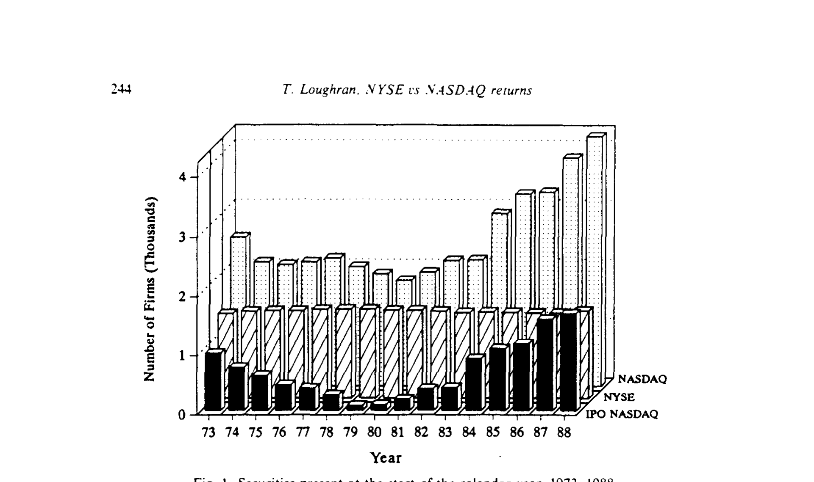
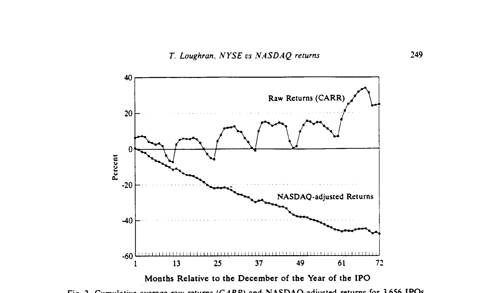
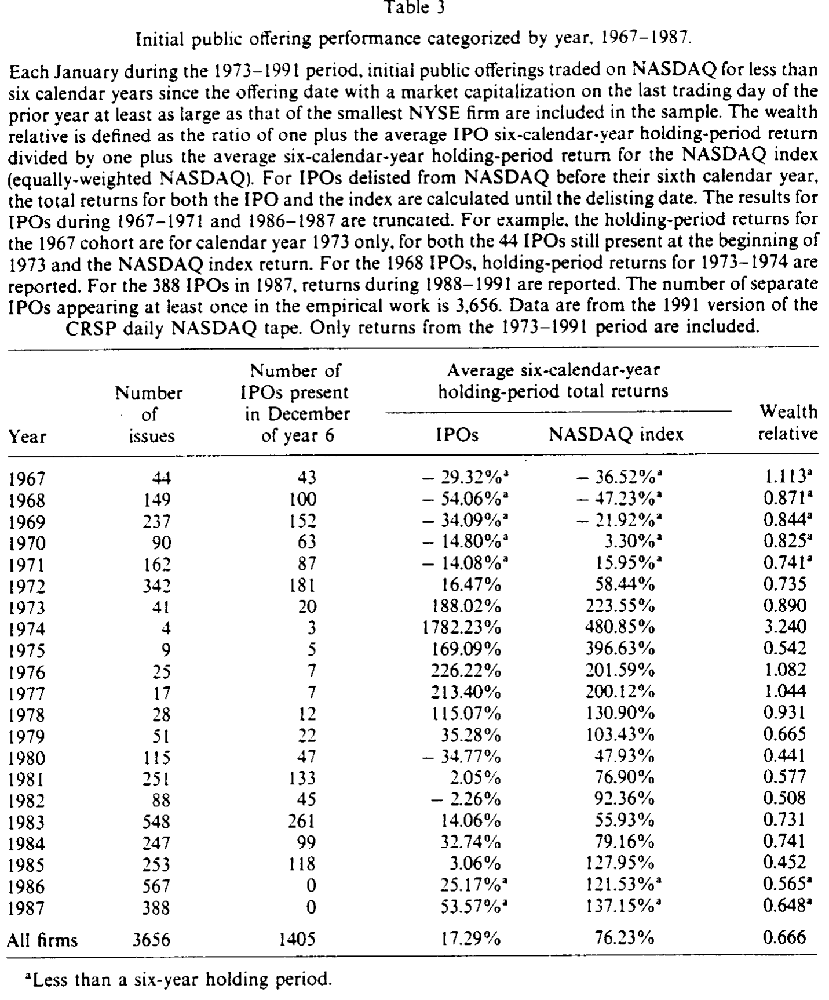
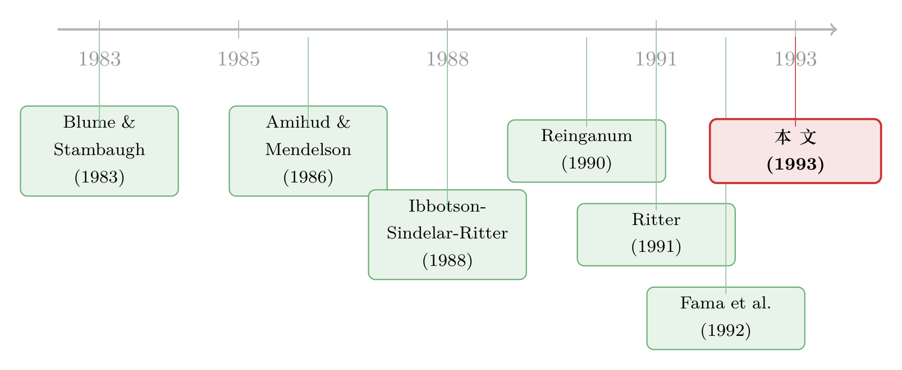

纳斯达克跑输的那 6%，是「市场结构」，还是塞满了新股？
本文读的是 Loughran (1993, Journal of Financial Economics)：Reinganum (1990) 发现，在规模相同的前提下，纽交所股票的平均年收益比纳斯达克高出约 6%，并把它归因于纳斯达克更好的做市商流动性。本文给出一个截然不同的解释——纳斯达克上挤满了刚上市不久、长期跑输的新股，这个「IPO 效应」一项就能解释将近 4%、约 60% 的价差。换句话说，所谓的「微观结构溢价」，有一大半其实是新股的烂账。
1 一个看似干净的 6%
故事要从一个很「干净」的发现说起。
Reinganum (1990) 做了一件在当时颇具说服力的事：他把纽交所（New York Stock Exchange, NYSE）和纳斯达克（NASDAQ）的股票，按市值排进同样的规模档位里，然后比较档位内两个交易所的平均收益。结果是，在规模相同的前提下，1973–1988 年间纽交所股票的平均收益每年要比纳斯达克高出约 6%。
这个数字漂亮就漂亮在它「控制了规模」。我们早就知道小公司收益高（规模效应），所以如果你不控制规模，拿纽交所的大盘股去比纳斯达克的小票，比出来的差异说明不了什么。Reinganum 把规模摁住了，剩下的 6% 看上去就只能是「交易所本身」的差别。于是他给出了一个很自然的解释：纳斯达克靠相互竞争的做市商（competing market makers）提供了更优的流动性，流动性好的资产要求的预期收益更低——这正是 Amihud and Mendelson (1986) 那条「流动性溢价」逻辑的应用。纽交所收益高，是因为它的流动性「差」，投资者要为此索取补偿。
听起来天衣无缝。一个市场微观结构（market microstructure）的故事，量出了一个 6% 的价格。
2 一个自然的怀疑：纳斯达克到底装着什么
但本文作者盯着这 6%，问了一个更朴素的问题：纽交所和纳斯达克，真的只是「同样的公司、不同的交易制度」吗？
恐怕不是。同一时期，Ritter (1991) 刚刚捅破了另一件事：1975–1984 年间上市的公司，在发行后的三年里显著跑输一组规模相当的 Amex / 纽交所老股票。而 Ritter 的脚注里有一句要命的话——他样本里 98% 的 IPO 最初都挂在纳斯达克上，三年内只有 9% 转板去了纽交所或美交所。
把这两件事放在一起，张力一下就出来了：
- Reinganum 说，纳斯达克收益低，是交易制度（微观结构）的锅；
- Ritter 说，新股收益低，是新股的锅；
- 可新股几乎全都待在纳斯达克上。
于是一个自然的怀疑浮现：会不会 Reinganum 量到的那个「纳斯达克折价」，根本不是交易制度造成的，而只是因为纳斯达克这个篮子里，塞满了 Ritter 笔下那些跑输的新股？反过来问也成立：Ritter 看到的「IPO 跑输」，会不会其实是「纳斯达克 vs. 美交所-纽交所」的交易所差异？
本文的核心主张，就是把这两个问题同时回答掉：纳斯达克较低的收益，主要是 IPO 长期表现差的体现。 在 6% 的年化价差里，将近 4% 可以归到新股头上。
3 数据：把纳斯达克拆成「老兵」与「新兵」
要验证这个怀疑，关键动作是分组。
数据来自芝加哥大学 CRSP 的 1990 版日度磁带。因为 CRSP 的纳斯达克数据从 1972 年 12 月才开始，样本期定在 1973 年 1 月起。作者把纳斯达克上的股票切成两拨：
- 成熟组（seasoned）：满足以下任一条件即归入——(i) 截至当年首个交易日，已在纳斯达克挂牌满六个日历年；或 (ii) 距其首次发行已过去六个或更多日历年。
- IPO 组：在纳斯达克交易不足六个日历年的新股。这「六年」的切口不是随手定的，正是为了对应下文那个长达六年的跑输窗口。
此外还保留一个纳斯达克全样本组（NASDAQ）（当年初在纳斯达克交易的全部股票，不设任何「资历」限制），专门用来跟 Reinganum 对标；以及纽交所组（NYSE）。
为了和 Reinganum 严格可比，本文照搬了他的一个关键过滤：剔除掉所有市值小于「最小的那只纽交所股票」的纳斯达克公司。规模档位（size decile）则每年一月用全部纽交所普通股按市值排序、分成十档来划定，再用同一套切点去给纳斯达克公司归档。

Figure I: Securities present at the start of the calendar year, 1973-1988
这一拆，问题的形状立刻就清楚了。如图 I 所示，纽交所每年大约稳定有 1,500 只证券；而 IPO 型纳斯达克的数量却剧烈起伏——1979–1980 年极少（因为 1974–1979 年发行清淡），1984、1987 年又因 1983、1986 两个发行大年而暴增。更要命的是规模分布：67% 的纳斯达克公司挤在最小的那个纽交所规模档里，整个 16 年里只有 21 只纳斯达克股票能进到最大档。这迫使所有比较都集中在 Small 到 5 这几个小档位上（95% 的纳斯达克证券都在这里）。
换句话说，Reinganum 拿来和纽交所比的「纳斯达克」，本质上是一个小盘 + 大量新股的篮子。这正是怀疑的起点。
4 IPO 的长跑：不是三年，是六年
接着，一个自然的问题是：新股到底跑输多久、跑输多狠？
Ritter (1991) 用 1,526 只 IPO、三年窗口给出了答案。本文把样本扩到 3,656 只 IPO（1967–1987 年发行），窗口拉长到六个日历年，逐月再平衡地追踪它们的收益。

Figure 2: Cumulative average raw returns (CARR) and NASDAQ-adjusted returns for 3.656 IPOs
结果触目惊心。如图 2，IPO 的累计收益在发行后 72 个月里，持续地、明显地低于同期复利的 CRSP 纳斯达克等权指数；经市场调整后的累计收益一路向下，直到第六年才略微放缓。（顺带一提，原始收益里那个一月暴涨、十月至十二月走弱的「一月效应」，一旦做了市场调整就消失了——它是整个市场的季节性，不是新股独有的。）
把账算到底有多难看？请看表 3。

Table 3
如表 3 所示，作者按发行年份把 IPO 的六年持有期收益和同期纳斯达克指数收益逐年对照，并算出财富比率（wealth relative）——即「1 + IPO 平均持有期收益」除以「1 + 指数平均持有期收益」。21 个发行年份里，只有 4 个财富比率大于 1，而这 4 个无一例外都是发行清淡的小年份。汇总来看：
- IPO 的平均六年持有期收益是
17.29%； - 同期持有纳斯达克指数的收益是
76.23%； - 全样本财富比率
0.666。
0.666 是什么概念？它比 Ritter 报告的三年财富比率 0.831 还要低得多。也就是说，Ritter 用三年窗口只捕捉到了 IPO 跑输的一部分——在他分析的十个年份里，有九个的六年财富比率都低于他表 8 里的三年财富比率。而且作者特别提醒：由于纳斯达克指数本身就包含 IPO，加上首尾年份的截断只能捕捉部分后市表现，这个 0.666 其实是向 1 偏高的——真实的跑输只会更严重。
到这里，「新股长期跑输」这件事已经被钉得很死。但这还没回答最初的问题：这笔烂账，能解释多少 Reinganum 的 6%？
5 真正关键的一步：把价差拆成两半
但真正关键的一步，在于一个简洁到近乎狡黠的分解。
为了跟 Reinganum 可比，作者定义了毛差额流动性溢价（gross differential liquidity premium, GDLP）：在某个规模档 p 内，纽交所与纳斯达克股票月度收益之差的时间序列平均。先看组合收益的定义（以纳斯达克为例，档位 p 内有 n 只证券）：
$$R_{NASDAQ,p,t} = \frac{1}{n}\sum_{i=1}^{n} R_{it}, \qquad p=1,\dots,8,\quad t=1,\dots,T.$$
于是 GDLP 就是：
$$GDLP_p = \frac{1}{T}\sum_{t=1}^{T}\left(R_{NYSE,p,t} - R_{NASDAQ,p,t}\right), \qquad p=1,\dots,8,\quad t=1,\dots,T.$$
（标准误直接取 GDLP 时间序列标准差除以月数 T 的平方根；作者检查过自相关系数在 -0.0962 到 0.0960 之间，故未作自相关调整。）
Reinganum 量的，就是「纽交所 − 全样本纳斯达克」这个 GDLP。本文复现出来，在最小的 Small 档里，纽交所收益每年比纳斯达克高约 7%，和 Reinganum 高度一致。
魔法在下一步。作者注意到，既然纳斯达克已经被拆成了「成熟」和「IPO」两组，那么「纽交所 − IPO 型纳斯达克」这个价差，可以被恒等地拆开：
这个加减法看着平平无奇，却恰恰是全文的支点。它把一个观测到的总价差，干净地劈成了「交易所制度」和「新股资历」两块——因为右边第二项 (R_{Seasoned}-R_{IPO}) 比较的是同一个交易所、同样的做市商制度、同样规模的两组股票，唯一的区别就是「老」还是「新」。微观结构在这一项里被自动抵消了，剩下的纯粹是 IPO 效应。
6 反转：4% 是新股的锅，2% 才是制度的
于是反转出现了。
把这套分解套到 1973–1988 年（Reinganum 的样本期）的 Small 到 5 档上，作者得到了一组可以直接相加的年化数字：
- 纽交所 − 全样本纳斯达克：
5.62%（本文）/5.68%（Reinganum）——两者几乎重合，说明复现无误； - 纽交所 − IPO 型纳斯达克：
6.89%； - 纽交所 − 成熟纳斯达克（微观结构效应）：
2.28%； - 成熟 − IPO 型纳斯达克（IPO 效应）：
4.69%。
对账一下：2.28% + 4.69% ≈ 6.97%，与 6.89% 在舍入误差内吻合，分解成立。
结论一目了然：在那个被当作「流动性溢价」的价差里，真正属于微观结构的只有约 2.28%，而 IPO 效应高达 4.69%。落到「纽交所 − 全样本纳斯达克」那 6% 上，作者的说法是：将近 4%、约 60%，是新股长期跑输撑起来的；微观结构那部分被削弱、但没有被消除——所以 Reinganum 的流动性故事并非全错，只是被严重高估了。
更妙的是，这套分解同时回答了 Ritter 的另一半问题。既然 IPO 型纳斯达克跑输的，是同样规模的成熟纳斯达克股票，那么 Ritter 观察到的新股跑输就不是一个「纳斯达克上市效应」——你不能说新股差是因为它挂在纳斯达克，因为它身边那些同在纳斯达克的老股票并不差。新股差，差在它是新股。
至于「纳斯达克收益是不是被 CRSP 的算法做低了」这个技术性疑虑（非 NMS 股票用买卖中间价、可能产生 Blume and Stambaugh (1983) 所说的偏误），作者也排除了：两个交易所的中位股价相近，每年最多 12 次再平衡，算法偏误不足以解释这么大的差距。
7 文献脉络
把这篇文章放回它所在的那条线上，逻辑就更顺了。
最上游是两条平行的支流。一条是流动性定价：Amihud and Mendelson (1986) 把买卖价差写进资产定价，奠定了「流动性差 → 要求收益高」的逻辑；Reinganum (1990) 正是把这条逻辑套到纽交所 vs. 纳斯达克上，量出了那个著名的 6%。另一条是新股长期表现：Ibbotson, Sindelar, and Ritter (1988) 记录了 IPO 的潮汐，Ritter (1991) 则用三年窗口钉死了「IPO 长期跑输」。

本文 (1993) 恰好站在这两条支流的交汇处：它用一个「成熟 vs. 新股」的恒等分解，把 Reinganum 的微观结构故事和 Ritter 的 IPO 故事接上了头，并指出前者有一大半其实是后者。几乎同时，Fama, French, Booth, and Sinquefield (1992) 也在用风险-收益的角度审视纽交所与纳斯达克股票的差异，与本文形成呼应。
往下游看，这条「IPO 长期跑输到底真不真」的争论远未结束。后来的研究开始质疑：这种跑输究竟是真实的、需要解释的异象，还是抽样与基准选择带来的算术假象？（关于这条反思的脉络，可参见《为什么「上市后跌跌不休」可能是一道算术题？》，以及把跑输归因于分析师过度乐观的《分析师太好骗：新股长期跑输背后，藏着一笔被'轻信'的账》。）本文的贡献，正是在这场争论的早期，提供了一个「分解到位、基准内生一致」的样板。
评论与延伸（Q&A + 研究方向）
(a) 几个可能的疑问
Q：把纳斯达克拆成「成熟」和「IPO」，这个六年切口是不是有点随意？换个年限结论会变吗？
六年并非凭空设定，而是被图 2 那条「跑输延续到第六年才放缓」的曲线反推出来的——切短了会把仍在跑输的新股误划进成熟组，从而低估 IPO 效应、高估微观结构效应。所以这个选择如果有偏，方向是保守的：它倾向于让作者的结论更弱而非更强。
Q：微观结构效应仍有 2.28% 且统计显著，这是不是反而证明 Reinganum 是对的？
部分对。作者从未声称微观结构毫无作用——他明确说价差「被削弱、但未被消除」。真正的修正在于量级：原本被整体归给制度的
6%，制度只占约三分之一。Reinganum 的机制存在，但被新股的烂账冒名顶替了一大半。
Q：IPO 跑输纳斯达克指数，可指数里本身就含 IPO，这个比较公平吗？
这恰恰是作者诚实的地方。他指出，因为基准（纳斯达克指数）已经被 IPO「污染」，加上首尾年份截断，财富比率
0.666是向 1 偏高的——真实跑输只会更狠。这是一个会削弱自己结论、却被如实披露的偏误方向。
Q：会不会是 CRSP 用买卖中间价算纳斯达克收益，人为压低了它？
作者专门排除了这条。Blume and Stambaugh (1983) 的偏误确实存在于用「最后成交价」算收益的场合，但两个交易所中位股价相近、再平衡次数有限，不足以解释这么大的系统性差距。
Q：这篇文章到底是「驳倒」了 Ritter，还是「补强」了他？
两者都有。它补强了 Ritter——把窗口从三年拉到六年、样本从 1,526 扩到 3,656，证明跑输更久更深；同时又改写了 Ritter 的归因——跑输不是「上了纳斯达克」造成的，因为同台的成熟股并不跑输。新股差，差在「新」。
Q：那对一个想做空新股的投资者，这意味着什么？
意味着「IPO 长期跑输」是一个跨交易所、跨窗口都稳健的现象，但它高度集中在发行大年的新股上（财富比率 > 1 的全是清淡年份）。择时与择券比单纯「做空所有新股」重要得多——这也为后来「IPO 浪潮」一脉的研究埋下了伏笔。
(b) 几个可能的研究问题与提案
1. 把同样的「成熟 vs. 新发」分解搬到公司债市场
【经济故事】新发行债券（尤其是高收益新券）常被认为带有「新券溢价」与较差的二级流动性，这与股票市场的「IPO 型 vs. 成熟」之分高度同构。若一只债券的「资历折价」其实来自发行人质地而非交易制度，那么很多被归给流动性的信用利差成分需要重新归因。 【可行性】中。数据上 TRACE + Mergent FISD 可识别发行日期与后市成交，能构造「新券组 vs. 老券组」并按评级/久期配对。识别上的难点是债券存续期短、横截面稀疏，分解需要在发行人层面控制基本面，doable 但要小心生存偏误。
2. 外资持有比例会放大还是熨平这种「新股折价」？
【经济故事】外资机构往往偏好大盘、成熟、信息透明的标的，对小盘新股参与度低。若外资进入一个市场后系统性地回避新发标的，则新股的需求基础更薄、跑输可能更深；反之，外资若追逐成长性新股，则可能托住价格。这把本文的「篮子构成」逻辑延伸到了持有人构成。 【可行性】中。可用各国「可投资度」或 FactSet/13F 类持股数据，按发行后年限交互外资持股比例。识别策略可借助纳入指数、放开 QFII 额度等准自然实验。难点是外资偏好与公司质地内生，需要外生的开放冲击。
3. 重做 Reinganum-Loughran 分解，但把「流动性」直接量出来
【经济故事】本文用「成熟 vs. 新股」间接抵消了微观结构，但没有直接度量流动性。今天我们有 Amihud 非流动性、有效价差、Roll 估计等多把尺子，可以把 GDLP 进一步拆成「可观测流动性差异」与「资历/基本面差异」两块，检验那残余的
2.28%里究竟有多少真是流动性。 【可行性】高。CRSP + TAQ 足以构造日内流动性指标，分解框架本文已给出，只需把(R_{NYSE}-R_{Seasoned})进一步对流动性指标投影。这是一个干净、可直接复制扩展的项目。
4. 「跨交易所篮子构成」会不会污染今天的因子检验？
【经济故事】本文的根本洞见是：当你比较两个「篮子」时，篮子里的成分构成可能冒充「制度/风险」效应。今天大量横截面研究在纳斯达克与纽交所混合样本上跑因子，若新上市公司在两交易所分布不均，规模/价值/盈利等因子的载荷可能被发行节律污染。 【可行性】高。用 CRSP 全样本，按上市年限与交易所双重分层重估经典因子组合，看是否有因子的溢价主要来自「年轻公司聚集的那一格」。数据与方法都现成。
参考文献
- Amihud, Yakov and Haim Mendelson (1986). Asset pricing and the bid-ask spread. Journal of Financial Economics 17, 223–249.
- Blume, Marshall E. and Robert F. Stambaugh (1983). Biases in computed returns: An application to the size effect. Journal of Financial Economics 12, 387–404.
- Fama, Eugene F., Kenneth R. French, David G. Booth, and Rex Sinquefield (1992). Differences in the risks and returns of NYSE and NASD stocks. Unpublished working paper, University of Chicago.
- Ibbotson, Roger G., Jody L. Sindelar, and Jay R. Ritter (1988). Initial public offerings. Journal of Applied Corporate Finance 1, 37–45.
- Reinganum, Marc R. (1990). Market microstructure and asset pricing: An empirical investigation of NYSE and NASDAQ securities. Journal of Financial Economics 28, 127–147.
- Ritter, Jay R. (1991). The long-run performance of initial public offerings. Journal of Finance 46, 3–27.